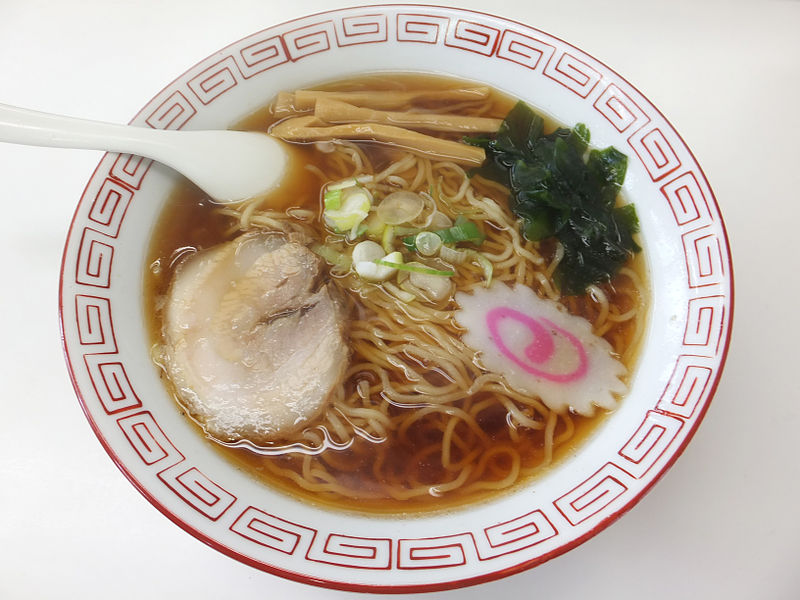

A Japanese noodle dish. It consists of Chinese-style wheat noodles served in a meat-based broth, often flavored with soy sauce or miso, and uses toppings such as sliced pork, nori (dried seaweed), menma, and scallions. Ramen has its roots in Chinese noodle dishes nearly every region in Japan has its own variation of ramen, such as the tonkotsu (pork bone broth) ramen of Kyushu, and the miso ramen of Hokkaido. Mazemen is a ramen dish that is not served in a soup, but rather with a sauce (such as tare).